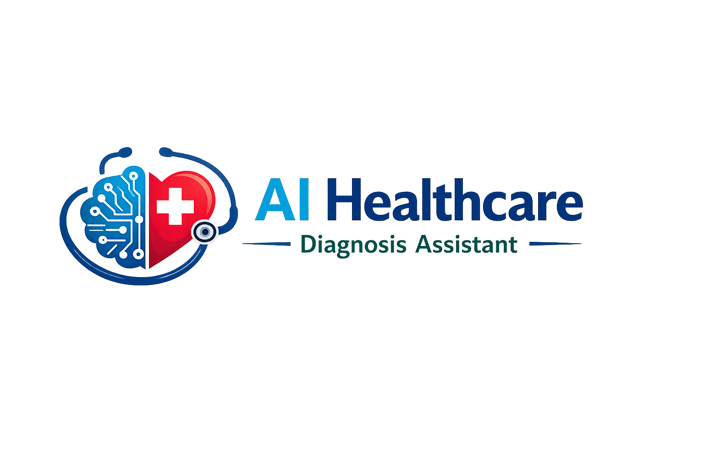
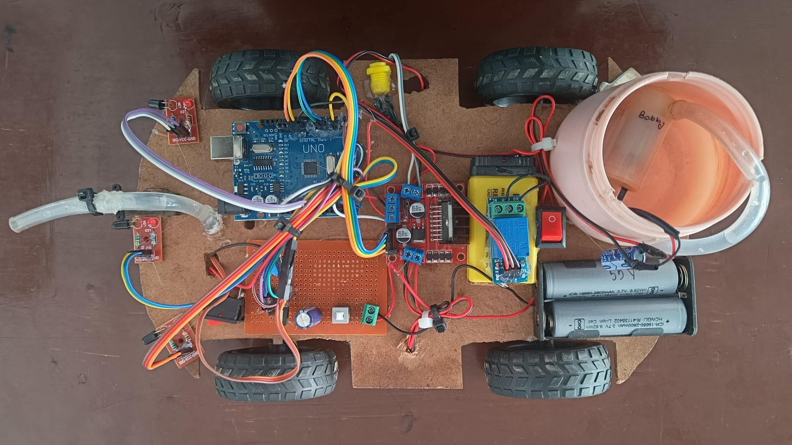

I build things that sense, think and react — from an AI-powered healthcare diagnosis assistant that reads clinical data, to a drowsy-driver detection system and a fire-fighting robot that reads flame sensors on the fly. AI/ML · Generative AI · Computer Vision · Embedded Systems.
I'm a final-year engineering student pursuing a B.Tech in Computer Science (AI & ML) at BIET, Lucknow, with my hands equally comfortable on an Arduino breadboard, a Python notebook, and a Generative AI pipeline.
My work sits at the intersection of embedded hardware, computer vision and applied AI — I like taking a real-world problem, whether it's a fire hazard, a drowsy driver, or a patient's clinical data, and building a working sensor-to-decision or data-to-diagnosis pipeline around it, not just a proof of concept on paper.
I've since taken that further through hands-on internships in AI/ML and Generative AI, and I'm currently deepening my knowledge of Machine Learning and NLP — with consistent gym time outside the lab too.

● project leadAn intelligent diagnostic application that uses machine learning models to analyze a patient's clinical parameters and assist with medical risk assessment — built end-to-end as project lead, from the ML pipeline to the data layer to the reporting engine.
The system implements robust database management to securely track structured patient records and historical data over time, and closes the loop with an automated report generation module that formats diagnostic summaries and graphical insights dynamically, turning raw predictions into something a clinician can actually read.
A real-time safety system built in Python that watches the road through the driver's eyes — literally. Using OpenCV, it tracks facial landmarks frame-by-frame and computes both the Eye Aspect Ratio (EAR) and Mouth Aspect Ratio (MAR) to detect fatigue — eyelids drifting shut as well as yawning micro-sleep events.
An Arduino microcontroller is seamlessly integrated with an external blink sensor to form a hybrid hardware-software driver monitoring framework, and the moment sustained eye closure or yawning is detected, it triggers instant audible and physical safety alerts, giving the driver a critical second to react.

● live buildA fully functional autonomous rescue-bot built from the chassis up on an Arduino board with multi-module IoT sensors. Flame and thermal sensors are mounted around the frame to continuously scan for a fire source, working alongside obstacle-avoidance modules for autonomous navigation and immediate fire detection — no human operator required.
Motor driver modules and automated water-pump actuators handle remote or fully autonomous fire suppression once a source is located. It was as much an exercise in circuit design and power management as it was in code — every wire on that board is hand-routed and hand-soldered.
Python for AI/ML pipelines and data work, SQL for structured storage, and Embedded C/C++ for microcontroller-level control on Arduino.
Machine Learning, Deep Learning, Generative AI, LLMs, RAG, Prompt Engineering, Neural Networks and applied Computer Vision.
MySQL for structured data storage, querying, and backing application logic — including patient-record management.
OpenCV, facial landmark tracking, EAR/MAR-based detection algorithms, and real-time video processing.
Arduino platforms, motor drivers, relay modules, sensor integration and power management for autonomous hardware.
Git/GitHub for version control, VS Code as a daily driver, and Arduino IDE for flashing embedded builds.
Placed 3rd in the technical idea-presentation competition hosted by BIET's tech fest.
Earned certification for successful project execution and technical evaluations in the IBM–Nasscom Project Based Experiential Learning program.
Attended a blockchain-technology-sponsored seminar on "Enhancing Cybersecurity using Blockchain Technology" at Bansal Institute of Engineering & Technology, Lucknow.
Deepening my understanding of Machine Learning and Natural Language Processing, alongside consistent strength training at the gym.
Open to internships, collaborations, and conversations about robotics, computer vision, generative AI or anything in between. Reach out on whichever channel suits you.